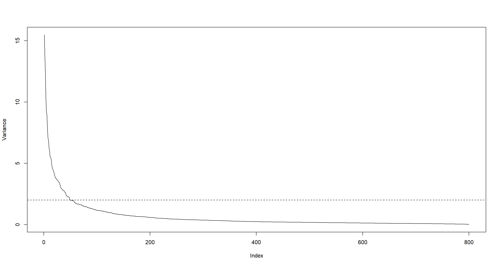
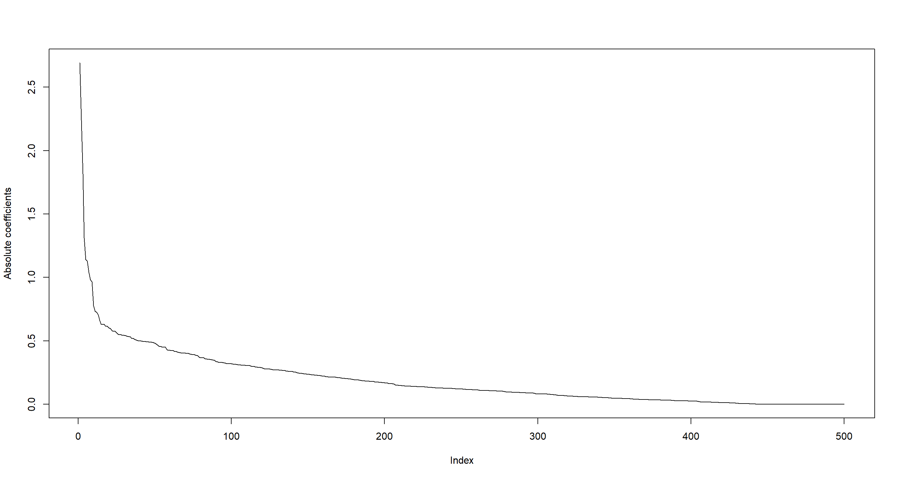
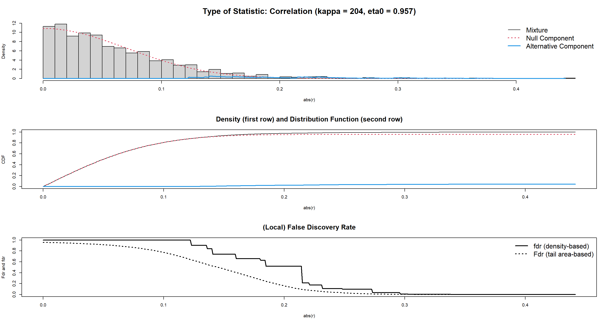
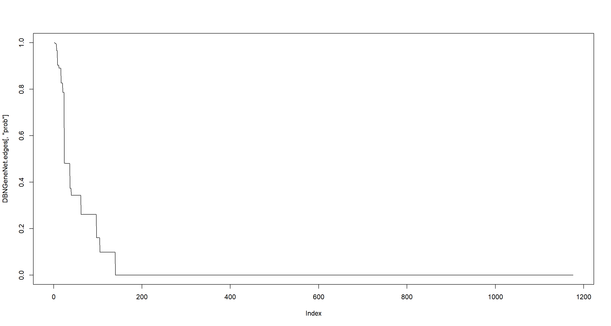
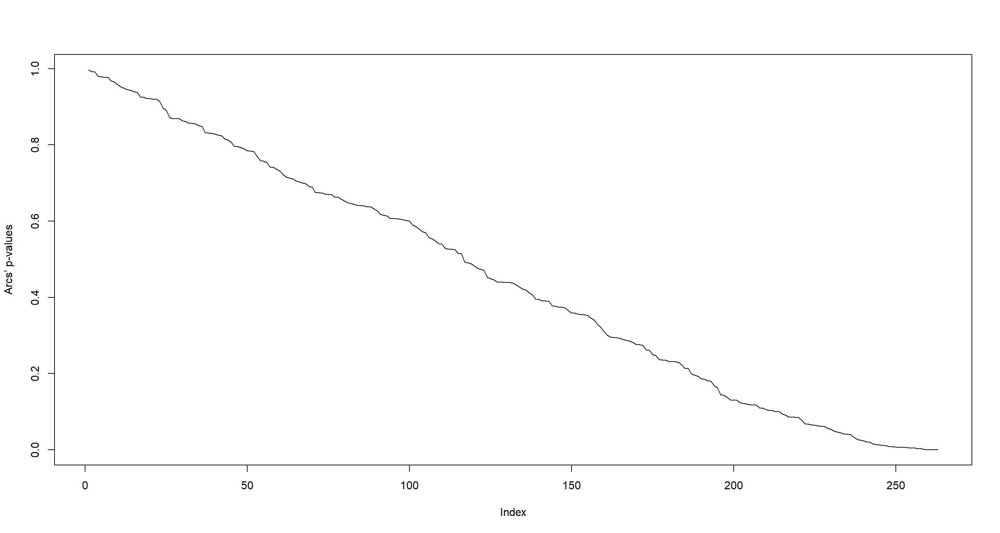
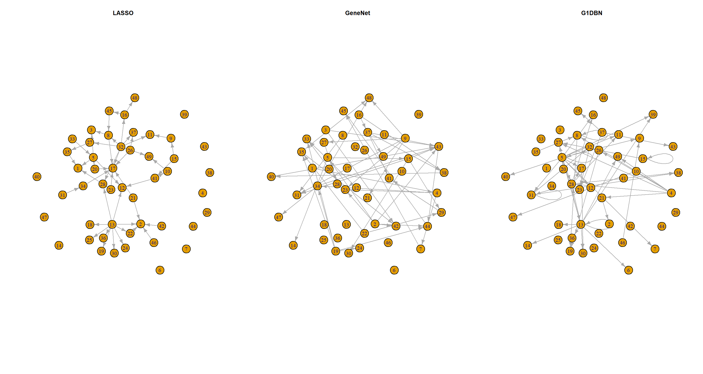

Dynamic Bayesian Networks
Material
- Dynamic Bayesian Networks by Gregor Mathes (one of our study group members)
Exercises
These are answers and solutions to the exercises at the end of chapter 3 in Bayesian Networks in R with Applications in Systems Biology by by Radhakrishnan Nagarajan, Marco Scutari & Sophie Lèbre. Much of my inspiration for these solutions, where necessary, by consulting the solutions provided by the authors themselves as in the appendix.
R Environment
For today’s exercise, I load the following packages:
library(vars)
library(lars)
library(GeneNet)
library(G1DBN) # might have to run remotes::install_version("G1DBN", "3.1.1") first
Nagarajan 3.1
Consider the
Canadadata set from the vars package, which we analyzed in Sect. 3.5.1.
data(Canada)
Part A
Load the data set from the
varspackage and investigate its properties using the exploratory analysis techniques covered in Chap. 1.
str(Canada)
## Time-Series [1:84, 1:4] from 1980 to 2001: 930 930 930 931 933 ...
## - attr(*, "dimnames")=List of 2
## ..$ : NULL
## ..$ : chr [1:4] "e" "prod" "rw" "U"
summary(Canada)
## e prod rw U
## Min. :928.6 Min. :401.3 Min. :386.1 Min. : 6.700
## 1st Qu.:935.4 1st Qu.:404.8 1st Qu.:423.9 1st Qu.: 7.782
## Median :946.0 Median :406.5 Median :444.4 Median : 9.450
## Mean :944.3 Mean :407.8 Mean :440.8 Mean : 9.321
## 3rd Qu.:950.0 3rd Qu.:410.7 3rd Qu.:461.1 3rd Qu.:10.607
## Max. :961.8 Max. :418.0 Max. :470.0 Max. :12.770
Part B
Estimate a VAR(1) process for this data set.
(var1 <- VAR(Canada, p = 1, type = "const"))
##
## VAR Estimation Results:
## =======================
##
## Estimated coefficients for equation e:
## ======================================
## Call:
## e = e.l1 + prod.l1 + rw.l1 + U.l1 + const
##
## e.l1 prod.l1 rw.l1 U.l1 const
## 1.17353629 0.14479389 -0.07904568 0.52438144 -192.56360758
##
##
## Estimated coefficients for equation prod:
## =========================================
## Call:
## prod = e.l1 + prod.l1 + rw.l1 + U.l1 + const
##
## e.l1 prod.l1 rw.l1 U.l1 const
## 0.08709510 1.01970070 -0.02629309 0.32299246 -81.55109611
##
##
## Estimated coefficients for equation rw:
## =======================================
## Call:
## rw = e.l1 + prod.l1 + rw.l1 + U.l1 + const
##
## e.l1 prod.l1 rw.l1 U.l1 const
## 0.06381103 -0.13551199 0.96872851 -0.19538479 11.61375726
##
##
## Estimated coefficients for equation U:
## ======================================
## Call:
## U = e.l1 + prod.l1 + rw.l1 + U.l1 + const
##
## e.l1 prod.l1 rw.l1 U.l1 const
## -0.19293575 -0.08086896 0.07538624 0.47530976 186.80892410
Part C
Build the auto-regressive matrix $A$ and the constant matrix $B$ defining the VAR(1) model.
## base object creation
base_mat <- matrix(0, 4, 5)
colnames(base_mat) <- c("e", "prod", "rw", "U", "constant")
p <- 0.05
## object filling
pos <- which(coef(var1)$e[, "Pr(>|t|)"] < p)
base_mat[1, pos] <- coef(var1)$e[pos, "Estimate"]
pos <- which(coef(var1)$prod[, "Pr(>|t|)"] < p)
base_mat[2, pos] <- coef(var1)$prod[pos, "Estimate"]
pos <- which(coef(var1)$rw[, "Pr(>|t|)"] < p)
base_mat[3, pos] <- coef(var1)$rw[pos, "Estimate"]
pos <- which(coef(var1)$U[, "Pr(>|t|)"] < p)
base_mat[4, pos] <- coef(var1)$U[pos, "Estimate"]
## final objects
(A <- base_mat[, 1:4])
## e prod rw U
## [1,] 1.1735363 0.14479389 -0.07904568 0.5243814
## [2,] 0.0000000 1.01970070 0.00000000 0.0000000
## [3,] 0.0000000 -0.13551199 0.96872851 0.0000000
## [4,] -0.1929358 -0.08086896 0.07538624 0.4753098
(B <- base_mat[, 5])
## [1] -192.5636 0.0000 0.0000 186.8089
Part D
Compare the results with the LASSO matrix when estimating the L1-penalty with cross-validation.
## data preparation
data_df <- Canada[-nrow(Canada), ] # remove last row of data
## Lasso
Lasso_ls <- lapply(colnames(Canada), function(gene) {
y <- Canada[-1, gene] # remove first row of data, and select only target gene
lars(y = y, x = data_df, type = "lasso") # LASSO matrix
})
## Cross-validation
CV_ls <- lapply(1:ncol(Canada), function(gene) {
y <- Canada[-1, gene] # remove first row of data, and select only target gene
lasso.cv <- cv.lars(y = y, x = data_df, mode = "fraction")
frac <- lasso.cv$index[which.min(lasso.cv$cv)]
predict(Lasso_ls[[gene]], s = frac, type = "coef", mode = "fraction")
})
## output
rbind(
CV_ls[[1]]$coefficients,
CV_ls[[2]]$coefficients,
CV_ls[[3]]$coefficients,
CV_ls[[4]]$coefficients
)
## e prod rw U
## [1,] 1.17353629 0.14479389 -0.079045685 0.5243814
## [2,] 0.02570001 1.02314558 -0.004878295 0.1994059
## [3,] 0.09749788 -0.11991692 0.954389035 -0.1023845
## [4,] -0.17604953 -0.08192783 0.069502065 0.5086115
And for comparison the previously identified $A$:
A
## e prod rw U
## [1,] 1.1735363 0.14479389 -0.07904568 0.5243814
## [2,] 0.0000000 1.01970070 0.00000000 0.0000000
## [3,] 0.0000000 -0.13551199 0.96872851 0.0000000
## [4,] -0.1929358 -0.08086896 0.07538624 0.4753098
Part E
What can you conclude?
The whole point of LASSO, as far as I understand it, is to shrink parameter estimates towards 0 often times reaching 0 exactly. In the above this has not happened for many parameters, but is the case with the estimation provided by vars. I assume this might be because there just aren’t enough variables and/or observations in time.
Nagarajan 3.2
Consider the
arth800data set from the GeneNet package, which we analyzed in Sects. 3.5.2 and 3.5.3.
data(arth800)
data(arth800.expr)
Part A
Load the data set from the
GeneNetpackage. The time series expression of the 800 genes is included in a data set calledarth800.expr. Investigate its properties using the exploratory analysis techniques covered in Chap. 1.
str(arth800.expr)
## 'longitudinal' num [1:22, 1:800] 10.04 10.11 9.77 10.06 10.02 ...
## - attr(*, "dimnames")=List of 2
## ..$ : chr [1:22] "0-1" "0-2" "1-1" "1-2" ...
## ..$ : chr [1:800] "AFFX-Athal-GAPDH_3_s_at" "AFFX-Athal-Actin_3_f_at" "267612_at" "267520_at" ...
## - attr(*, "time")= num [1:11] 0 1 2 4 8 12 13 14 16 20 ...
## - attr(*, "repeats")= num [1:11] 2 2 2 2 2 2 2 2 2 2 ...
summary(arth800.expr)
## Longitudinal data:
## 800 variables measured at 11 different time points
## Total number of measurements per variable: 22
## Repeated measurements: yes
##
## To obtain the measurement design call 'get.time.repeats()'.
Part B
For this practical exercise, we will work on a subset of variables (one for each gene) having a large variance. Compute the variance of each of the 800 variables, plot the various variance values in decreasing order, and create a data set with the variables greater than 2.
## variance calculation
variance <- diag(var(arth800.expr))
## plotting
plot(sort(variance, decreasing = TRUE), type = "l", ylab = "Variance")
abline(h = 2, lty = 2)

## variables with variances greater than 2
dataVar2 <- arth800.expr[, which(variance > 2)]
dim(dataVar2)
## [1] 22 49
Part C
Can you fit a VAR process with a usual approach from this data set?
I don’t think so. There are more variables (genes) than there are samples (time steps):
dim(dataVar2)
## [1] 22 49
Part D
Which alternative approaches can be used to fit a VAR process from this data set?
The chapter discusses these alternatives:
- LASSO
- James-Stein Shrinkage
- Low-order conditional dependency approximation
Part E
Estimate a dynamic Bayesian network with each of the alternative approaches presented in this chapter.
First, I prepare the data by re-ordering them:
## make the data sequential for both repetitions
dataVar2seq <- dataVar2[c(seq(1, 22, by = 2), seq(2, 22, by = 2)), ]
LASSO with the lars package:
x <- dataVar2seq[-c(21:22), ] # remove final rows (end of sequences)
Lasso_ls <- lapply(colnames(dataVar2seq), function(gene) {
y <- dataVar2seq[-(1:2), gene]
lars(y = y, x = x, type = "lasso")
})
CV_ls <- lapply(1:ncol(dataVar2seq), function(gene) {
y <- dataVar2seq[-(1:2), gene]
lasso.cv <- cv.lars(y = y, x = x, mode = "fraction", plot.it = FALSE)
frac <- lasso.cv$index[which.min(lasso.cv$cv)]
predict(Lasso_ls[[gene]], s = frac, type = "coef", mode = "fraction")
})
Lasso_mat <- matrix(0, dim(dataVar2seq)[2], dim(dataVar2seq)[2])
for (i in 1:dim(Lasso_mat)[1]) {
Lasso_mat[i, ] <- CV_ls[i][[1]]$coefficients
}
sum(Lasso_mat != 0) # number of arcs
## [1] 456
plot(sort(abs(Lasso_mat), decr = TRUE)[1:500], type = "l", ylab = "Absolute coefficients")

James-Stein shrinkage with the GeneNet package:
DBNGeneNet <- ggm.estimate.pcor(dataVar2, method = "dynamic")
## Estimating optimal shrinkage intensity lambda (correlation matrix): 0.0539
DBNGeneNet.edges <- network.test.edges(DBNGeneNet) # p-values, q-values and posterior probabilities for each potential arc
## Estimate (local) false discovery rates (partial correlations):
## Step 1... determine cutoff point
## Step 2... estimate parameters of null distribution and eta0
## Step 3... compute p-values and estimate empirical PDF/CDF
## Step 4... compute q-values and local fdr
## Step 5... prepare for plotting

plot(DBNGeneNet.edges[, "prob"], type = "l") # arcs probability by decreasing order

sum(DBNGeneNet.edges$prob > 0.95) # arcs with prob > 0.95
## [1] 8
First-order conditional dependency with the G1DBN package:
G1DB_BN <- DBNScoreStep1(dataVar2seq, method = "ls")
## Treating 49 vertices:
## 10% 20% 30% 40% 50% 60% 70% 80% 90% 100%
G1DB_BN <- DBNScoreStep2(G1DB_BN$S1ls, dataVar2seq, method = "ls", alpha1 = 0.5)
plot(sort(G1DB_BN, decreasing = TRUE), type = "l", ylab = "Arcs’ p-values")

Nagarajan 3.3
Consider the dimension reduction approaches used in the previous exercise and the
arth800data set from theGeneNetpackage.
data(arth800)
data(arth800.expr)
Part A
For a comparative analysis of the different approaches, select the top 50 arcs for each approach (function
BuildEdgesfrom theG1DBNpackage can be used to that end).
LASSO
lasso_tresh <- mean(sort(abs(Lasso_mat), decreasing = TRUE)[50:51]) # Lasso_mat from exercise 3.2
lasso_50 <- BuildEdges(score = -abs(Lasso_mat), threshold = -lasso_tresh)
James-Stein shrinkage with the GeneNet package:
DBNGeneNet_50 <- cbind(DBNGeneNet.edges[1:50, "node1"], DBNGeneNet.edges[1:50, "node2"])
First-order conditional dependency with the G1DBN package:
G1DBN_tresh <- mean(sort(G1DB_BN)[50:51])
G1DBN.edges <- BuildEdges(score = G1DB_BN, threshold = G1DBN_tresh, prec = 3)
Part B
Plot the four inferred networks with the function plot from package
G1DBN.
Four inferred networks? I assume the exercise so far wanted me to also analyse the data using the LASSO approach with the SIMoNe (simone) package. I will skip over that one and continue with the three I have:
par(mfrow = c(1, 3))
## LASSO
LASSO_plot <- graph.edgelist(cbind(lasso_50[, 1], lasso_50[, 2]))
Lasso_layout <- layout.fruchterman.reingold(LASSO_plot)
plot(LASSO_plot,
layout = Lasso_layout,
edge.arrow.size = 0.5, vertex.size = 10,
main = "LASSO"
)
## James-Stein
DBN_plot <- graph.edgelist(DBNGeneNet_50)
# DBN_layout <- layout.fruchterman.reingold(DBN_plot)
plot(DBN_plot,
layout = Lasso_layout,
edge.arrow.size = 0.5, vertex.size = 10,
main = "GeneNet"
)
## First-order conditional
G1DBN_plot <- graph.edgelist(cbind(G1DBN.edges[, 1], G1DBN.edges[, 2]))
# G1DBN_layout = layout.fruchterman.reingold(G1DBN_plot)
plot(G1DBN_plot,
layout = Lasso_layout,
edge.arrow.size = 0.5, vertex.size = 10,
main = "G1DBN"
)

Part C
How many arcs are common to the four inferred networks?
## extract edges
LASSO_el <- as_edgelist(LASSO_plot)
DBN_el <- as_edgelist(DBN_plot)
G1DBN_el <- as_edgelist(G1DBN_plot)
## number of repeated edges in pairwise comparisons
sum(duplicated(rbind(LASSO_el, DBN_el)))
## [1] 0
sum(duplicated(rbind(LASSO_el, G1DBN_el)))
## [1] 6
sum(duplicated(rbind(DBN_el, G1DBN_el)))
## [1] 1
### all at once
sum(duplicated(rbind(LASSO_el, DBN_el, G1DBN_el)))
## [1] 7
Part D
Are the top 50 arcs of each inferred network similar? What can you conclude?
No, they are not. I can conclude that different dimension reductions produce different DAG structures.
Session Info
sessionInfo()
## R version 4.2.1 (2022-06-23 ucrt)
## Platform: x86_64-w64-mingw32/x64 (64-bit)
## Running under: Windows 10 x64 (build 19044)
##
## Matrix products: default
##
## locale:
## [1] LC_COLLATE=English_Germany.utf8 LC_CTYPE=English_Germany.utf8 LC_MONETARY=English_Germany.utf8 LC_NUMERIC=C LC_TIME=English_Germany.utf8
##
## attached base packages:
## [1] stats graphics grDevices utils datasets methods base
##
## other attached packages:
## [1] G1DBN_3.1.1 igraph_1.3.4 GeneNet_1.2.16 fdrtool_1.2.17 longitudinal_1.1.13 corpcor_1.6.10 lars_1.3 vars_1.5-6 lmtest_0.9-40
## [10] urca_1.3-3 strucchange_1.5-3 sandwich_3.0-2 zoo_1.8-10 MASS_7.3-58.1
##
## loaded via a namespace (and not attached):
## [1] highr_0.9 bslib_0.4.0 compiler_4.2.1 jquerylib_0.1.4 R.methodsS3_1.8.2 R.utils_2.12.0 tools_4.2.1 digest_0.6.29 jsonlite_1.8.0 evaluate_0.16
## [11] nlme_3.1-159 R.cache_0.16.0 lattice_0.20-45 pkgconfig_2.0.3 rlang_1.0.5 cli_3.3.0 rstudioapi_0.14 yaml_2.3.5 blogdown_1.13 xfun_0.33
## [21] fastmap_1.1.0 styler_1.8.0 stringr_1.4.1 knitr_1.40 vctrs_0.4.1 sass_0.4.2 grid_4.2.1 R6_2.5.1 rmarkdown_2.16 bookdown_0.29
## [31] purrr_0.3.4 magrittr_2.0.3 htmltools_0.5.3 stringi_1.7.8 cachem_1.0.6 R.oo_1.25.0